ADMINISTRACJA SYSTEMAMI OPERACYJNYMI / Konfiguracja w VirtualBox - Połączenie SSH i konfiguracja interfesów sieciowych netplan
Przekierowanie portów VirtualBox Połączenie SSH i konfiguracja interfesów sieciowych netplan
Zaimportuj maszyny wirtualne "Ubuntu20.04_Server.ova" i "Windows10.ova": 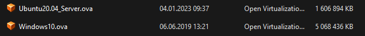 W maszynie wirtualnej Ubuntu serwer ustaw dwie karty sieciowe.Karta 1: NAT Karta 2: Sieć wewnętrzna 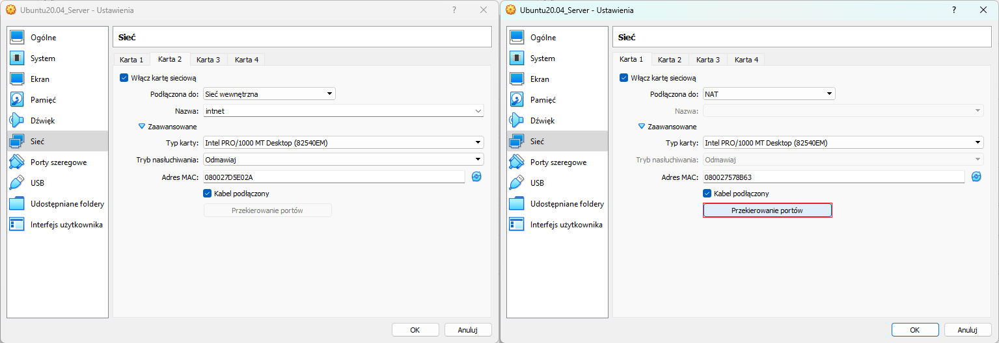 Na karcie NAT skonfiguruj "Przekierowanie portów" dla SSH z połączeniem localhost na port 22. 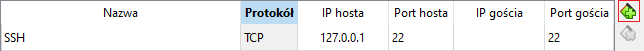 Uruchom jedną z poniszych konsol poleceń:
- CMD
- PowerShell
- Terminal dostępny w windows 11
Uruchom maszynę z serwerem Ubuntu, a nastepnie dokonaj zdalnego połączenia poprzez SSH.
Wpisz jedną z poniszych lini komend w wybranej konsoli poleceń: 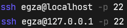 Przy połączeniu zostaniesz zapytany czy napewno chcesz sie połączyć. Wpisz yes (tak), a nastepnie zaloguj się do konta egza (hasło w opisie mszyny).
PS. podczas wpisywania hasła nie pojawi się żaden znak, ale hasło jest wpisywane. 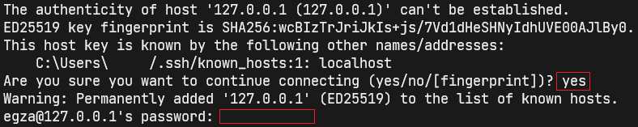 Zaktualizuj linki pakietów i zainstaluj aktualizacje do zainstalowanych pakietów. 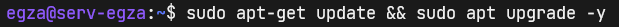 Możesz także doinstalować "Midnight Commander" z pakietu mc. Ja to zrobię dla lepszego zobrazowania konfiguracji interfesów sieciowych. Potem bedę kożystac z natywnego nano. 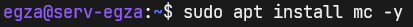 Polecenie ip a wyświetla wszystkie interfejsy sieciowe.
1: lo - jest to adres wewnętrzny localhost (127.0.0.1).
2: enp0s3 - jest to Karta 1: NAT z włączonym DHCP VirtualBox'a
3: enp0s8 - jest to Karta 2: Sieć wewnętrzna jeszcze nie skonfigurowana / aktualnie uśpiona "state DOWN".
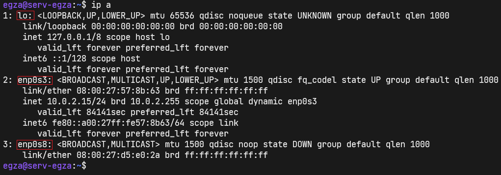 Przed przystąpieniem do edycji 00-installer-config, zrób kopię tego pliku z dopiskiem "_Kopia". 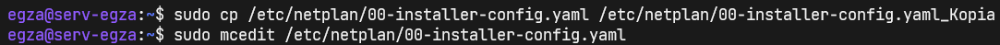 Pliki .yaml są bardzo upierdliwe. Uruchomiłem 00-installer-config.yaml w mcedit aby zobrazować błąd dabulacji (w tym pliku nie może być tabulacji). Ważne jest to aby zachować odpowiednie wcięcia i odstępy.
W prawej części poniżego obrazka przedstawiam przykładową konfigurację interfejsów. 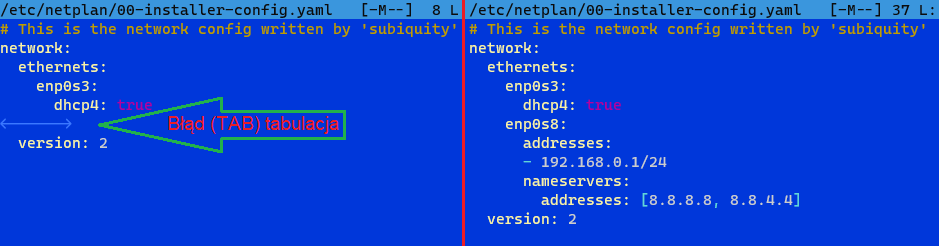 Aby zmiany w pliku 00-installer-config.yaml zostały zastosowane skożystaj z poniższej komendy. Gdy nic ci nie zwróci, to jest dobrze. 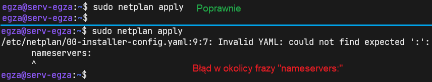 Weryfikacja konfiguracji:
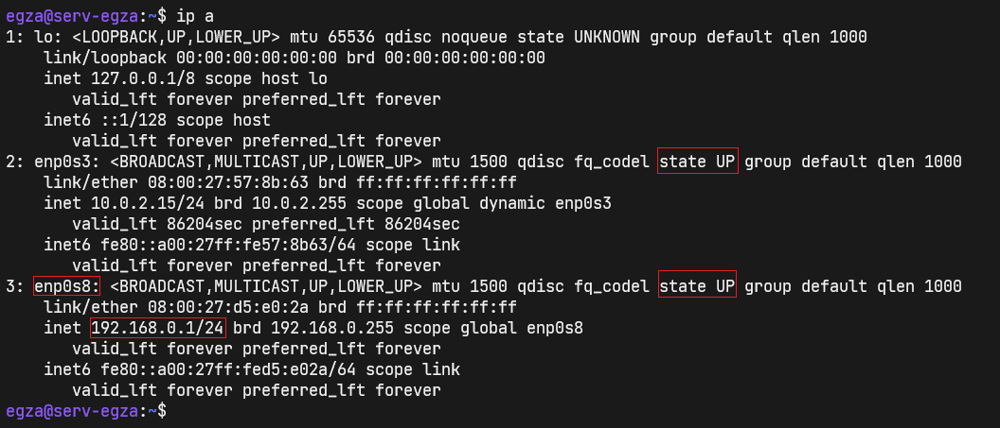 W razie gdyby karta sieciowa nie została włączona ( zamiast state UP było by state DOWN): 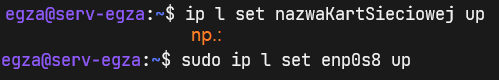 Dodatkowo zweryfikuj poprawność konfiguracji interfejsów wykonując ping do wp.pl. 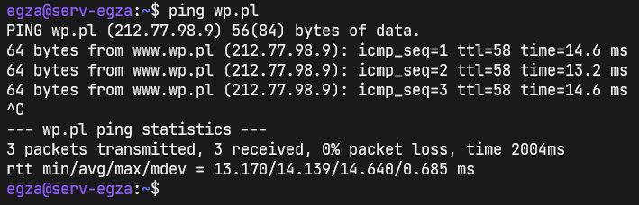 Aktualne konfiguracje pozwalają na wykonanie dalszych zadań.